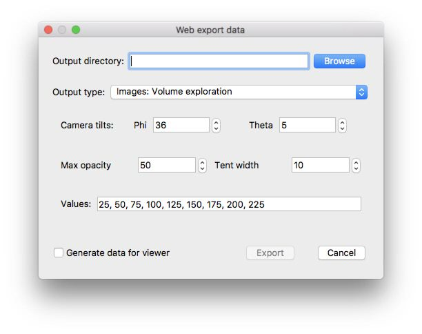

This exports the current scene with some exploration of the volume.

<div
class="tomviz-data-viewer"
data-url="../data/ImagesVolumeExploration.tomviz"
data-viewport="600x500"
data-no-ui
data-no-mouse
data-initialization="theta=126"
data-animation="phi=100&volume=500"
/>
<script type="text/javascript" src="https://unpkg.com/tomvizweb"></script>
|